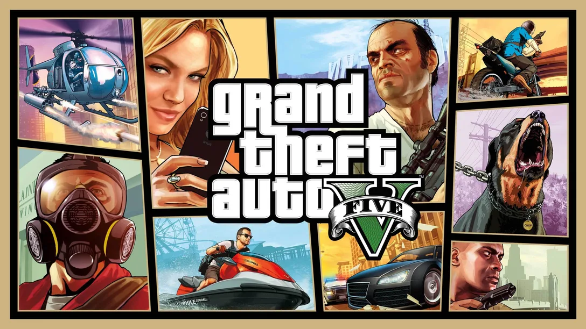
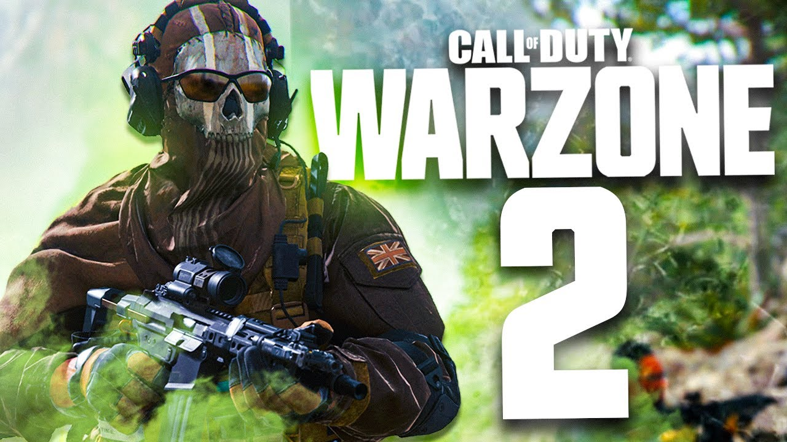
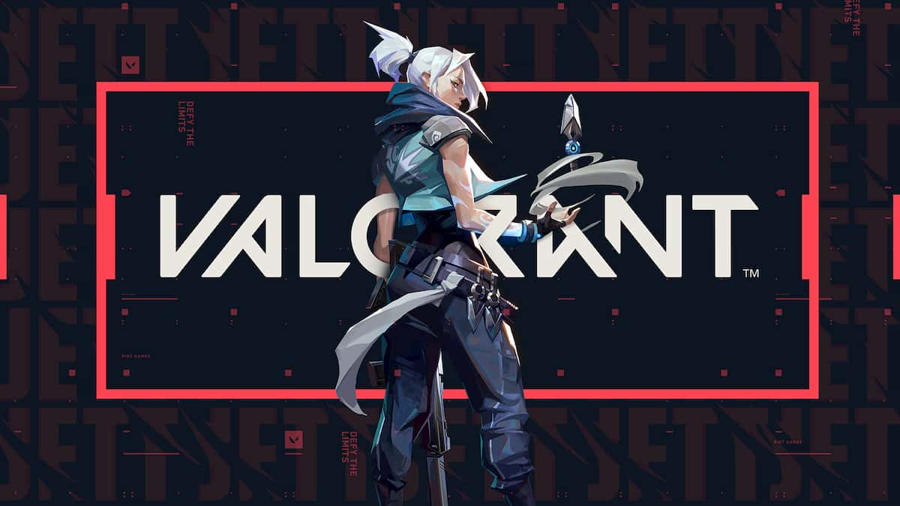

TOP 5 JOGOS DE PC
1. PlayerUnknowns
Os jogos do estilo Battle Royale já são bem conhecidos. Saiba o que é PUBG ou PlayerUnknowns Battlegrounds, como funciona o game que início a toda uma era moderna de jogos de sobrevivência. O game está disponível para PC (Windows), Xbox One, PS4, iOS (Apple) e Android,dois últimos na versão mobile de PUBG.
início a toda uma era moderna de jogos de sobrevivência. O game está disponível para PC (Windows), Xbox One, PS4, iOS (Apple) e Android,dois últimos na versão mobile de PUBG.
O jogo se destaca pela grande quantidade e variedade de armas espalhadas no mapa. Vão de pistolas, submetralhadoras, fuzis e fuzis de precisão. Fora isso, existem muitos itens para customizar as armas, como miras holográficas, de precisão, pentes de munição estendidos. Ao longo da partida o jogador poderá encontrar coletes a prova de balas, kits médicos, capacetes, latas de energéticos, e outros itens que vão ser de grande ajuda na partida.
link para baixar pubg gratis2. Red dead redemption 2
Red Dead Redemption é um jogo eletrônico de ação-aventura desenvolvido pela Rockstar San Diego e publicado pela Rockstar Games. Ele foi lançado em maio de 2010 para PlayStation 3 e Xbox 360, sendo um sucessor espiritual de Red Dead Revolver lançado em 2004. O jogo se passa em 1911 durante o declínio do Velho Oeste e segue a história de John Marston, um antigo fora da lei cuja esposa e filho foram tomados como reféns pelo governo para forçá-lo a trabalhar como seu pistoleiro contratado. Sem escolhas, Marston parte em uma jornada para levar três membros de sua antiga gangue até a justiça. O desenvolvimento de Red Dead Redemption começou em 2005, com o título empregando o motor de jogo Rockstar Advanced Game Engine a fim de aumentar suas capacidades de animação e renderização. Os desenvolvedores sentiram-se inspirados para criar o jogo depois de perceberem o potencial técnico tanto do PlayStation 3 quanto do Xbox 360, já tendo utilizado até o máximo os consoles da sexta geração em seus projetos anteriores. A equipe realizou grandes pesquisas sobre a época e o assunto, visitando locais e analisando filmes de faroeste com o objetivo de alcançar um realismo maior. Captura de movimento foi empregada para gravar os movimentos dos personagens e atores profissionais foram contratados para fazerem a dublagem.

link para comprar Red dead redemption 2
3. GTA V
Rockstar marca o retorno a Los Santos em um de seus projetos mais ambiciosos graças a uma área de jogo maior que a de Grand theft Auto IV, Red Dead Redemption e Grand Theft Auto: San Andreas juntos e uma campanha com três protagonistas simultâneos. Na pele de Michael (criminoso aposentado que acaba retornando à vida de crimes), Trevor (antigo companheiro de bandidagem de Michael e psicopata) e Franklin (faz-tudo iniciante no crime), os jogadores encontram em Grand Theft Auto V uma trama digna da Rockstar totalmente centrada em assaltos a banco. O game também inova por permitir que cada personagem siga com a sua vida quando o jogador está no controle de seus companheiros. Desse modo, a companhia consegue um nível de imersão totalmente novo ao gênero.
 link para comprar GTA 54. Call of Duty: War Zone 2
Por sua natureza muito competitiva, na melhor pegada mundo cão, os jogos battle royale não tendem a ser sobre fazer amizades com as pessoas que você conhece. Mas com sua grande reformulação 2.0, Call of Duty: Warzone fez alguns esforços admiráveis para nos inspirar a trabalhar juntos, comunicar e socializar, mesmo enquanto lutamos para ser os últimos sobreviventes. Algumas de suas outras novas ideias não compensam tão bem, como o novo mapa relativamente ok e seu sistema de mochila. Porém, mesmo que você deixe tudo isso de lado, a introdução de um excelente novo modo PvPvE é motivo mais do que suficiente para reunir um esquadrão e voltar para Warzone por boas partidas. Afinal, a verdadeira tela da vitória pode ser apenas os amigos que fizemos ao longo do caminho A primeira nova ideia social instigante é que você pode realmente recrutar jogadores inimigos para seu time em lobbies baseados em esquadrões se perder um companheiro de equipe. Esta é uma maneira inteligente de dar a times enfraquecidos ou retardatários que estão sozinhos uma chance de lutar e manter mais pessoas investidas em uma partida por mais tempo. Também é divertido fazer amigos em um battle royale, embora seja uma ideia que pode funcionar melhor no papel do que na prática. A maioria das pessoas ainda tende a abrir fogo logo de cara, então ainda não consegui convencer ninguém a se juntar ao meu time. Todavia, o simples fato de poder tentar é uma novidade divertida por si só.
Confina o trailer
Felizmente, o ritmo mais rápido do Warzone permaneceu intacto, mesmo apesar da aderência do saque, da rapidez do TTK e da grandeza do mapa. Depois de muitas, muitas quedas na Zona, ainda estou encontrando muitos tiroteios nos momentos certos, com círculos no final do jogo fornecendo o mesmo nível de alta tensão e pânico que você procura em uma noite livre. E o saque terrestre (armas encontradas no chão ou em caixotes) é variado e interessante, o que é mais importante do que nunca, considerando que os loadouts estão mais difíceis de obter agora. Antes que você pudesse acumular $ 10.000, vá para uma estação de compra e obtenha acesso às suas armas e vantagens personalizadas, o que lhe daria uma enorme vantagem sobre a concorrência. Não mais! Agora você só pode comprar uma de suas armas personalizadas de uma estação de compra por vez, sem o benefício de vantagens. Quer um loadout que você preparou anteriormente? Espere que um punhado de loadouts apareça em certos pontos da partida ou complete Strongholds: prédios controlados por IA cheios de bandidos blindados. Com os Loadouts não estando tão prontamente disponíveis, isso significa que os jogadores são canalizados para pontos de acesso que podem gerar alguns pontos altos emocionantes. Então, sim, a IA pode ser bobagem, mas é a ameaça de outras equipes que fornece a verdadeira emoção. Além disso, menos pessoas com suas armas personalizadas significa que todos são desafiados a usar as armas que coletam, fazendo com que pareça muito mais uma batalha pela sobrevivência do que antes.
link para baixar Call of Duty: War Zone 2 gratis5. Valorant
Valorant é a nova aposta da Riot Games no gênero de jogos de tiro, lançado grátis em 2 de junho de 2020 para PC. A empresa faz bastante sucesso com o MOBA competitivo League of Legends (LoL), mas agora traz um universo diferente do que ela e seu público estão acostumados, com personagens, mecânicas e fundamentos inéditos. O game será um esforço contínuo da produtora, e deve receber atualizações de balanceamento e novos conteúdos com o tempo para engajar uma comunidade promissora. O título busca atrair não apenas os fãs mais tradicionais de FPS, mas também uma nova geração de jogadores que pode dar uma chance e descobrir um novo game favorito. Vale lembrar que ele ultrapassou 1,6 milhão de visualizações simultâneas na Twitch TV antes mesmo do seu lançamento. Mas será que realmente corresponde às expectativas? Confira, no review a seguir, os prós e contras de Valorant.
Para garantir a vitória da partida, 13 rodadas devem ser vencidas. No início de cada round, os jogadores têm de se equipar com armas, armaduras e poderes dos personagens — com um sistema de economia semelhante ao de Counter-Strike. Isso significa que é preciso tomar cuidado ao comprar armas mais caras, pois, embora sejam mais fortes, podem trazer prejuízo caso o jogador morra na rodada seguinte. Todas essas semelhanças não são algo necessariamente ruim. O jogo ainda busca uma identidade própria com os seus mapas e personagens com interações constantes, que colaboram para construir o seu universo. O grande diferencial está na forma como a Riot lida com a acessibilidade nos seus jogos, pois Valorant é leve o suficiente para rodar em computadores mais fracos, é completamente gratuito para jogar, tem comunicação e suporte constante (em português) da desenvolvedora e é fácil de aprender. Por se tratar de um jogo gratuito, a Riot Games busca monetizá-lo com a venda de skins diferentes para as armas e demais itens cosméticos com um modelo de Passe de Batalha, que já está disponível para compra desde o lançamento. Nem todos os agentes vêm desbloqueados, mas o jogador tem acesso a eles gratuitamente ao ganhar experiência com missões diárias e demais desafios. Além do modo de jogo tradicional, existe um modo inédito chamado Disputa da Spike. Ele é muito parecido com o modo comum, mas focado em partidas ainda mais rápidas. Todos os atacantes carregam a bomba Spike consigo para plantá-la no local do objetivo. Pelo mapa, existem orbes de aumento de poder espalhados pelo cenário, os quais aumentam o dano, velocidade ou até mesmo garantem a habilidade suprema instantaneamente ao personagem. O conceito deste modo de jogo é bastante simples e talvez não supra a necessidade dos jogadores mais casuais, que vão acabar preferindo jogar uma partida comum. Os agentes de Valorant têm habilidades únicas e são bastante carismáticos — Foto: Reprodução/Bruno Magalhães Os agentes de Valorant têm habilidades únicas e são bastante carismáticos — Foto: Reprodução/Bruno Magalhães Um elenco interessante, mas com habilidades não tão diversificadas A Riot Games não costuma decepcionar com a construção dos seus personagens e Valorant está seguindo um caminho promissor. O elenco conta com 11 agentes únicos, cada um com uma nacionalidade e habilidades únicas para tirar proveito no combate. A sul-coreana Sage, por exemplo, pode curar e reviver aliados; a americana Viper domina substâncias venenosas para isolar o caminho até o objetivo; a brasileira Raze, vinda de Salvador, tem um arsenal explosivo potente para causar caos nas partidas. Muitos jogadores podem ter criado uma má impressão dos personagens com o Beta fechado, pois a apresentação deles não era tão interessante — imagens estáticas, feitas com o próprio motor gráfico, não convenciam. Na versão lançada oficialmente, no entanto, todos têm uma animação única muito bem feita e expressiva na tela de escolha, além de belíssimas artes. A identidade deles brilha ainda mais com a dublagem em português do Brasil, que está repleta de personalidade. Os poderes de Valorant têm efeitos especiais e sons muito específicos — Foto: Reprodução/Bruno Magalhães Os poderes de Valorant têm efeitos especiais e sons muito específicos — Foto: Reprodução/Bruno Magalhães Em contrapartida, logo ao jogar as primeiras partidas, a impressão que fica é que os poderes são muito parecidos. Muitos personagens têm “nuvens de fumaça” para bloquear visão, barreiras e poderes que cobrem o chão com algum elemento. Embora haja pequenas diferenças, elas acabam caindo na mesmice e tornam a composição de equipes não tão necessária como em Overwatch, por exemplo.
link para baixar Valorant grátis